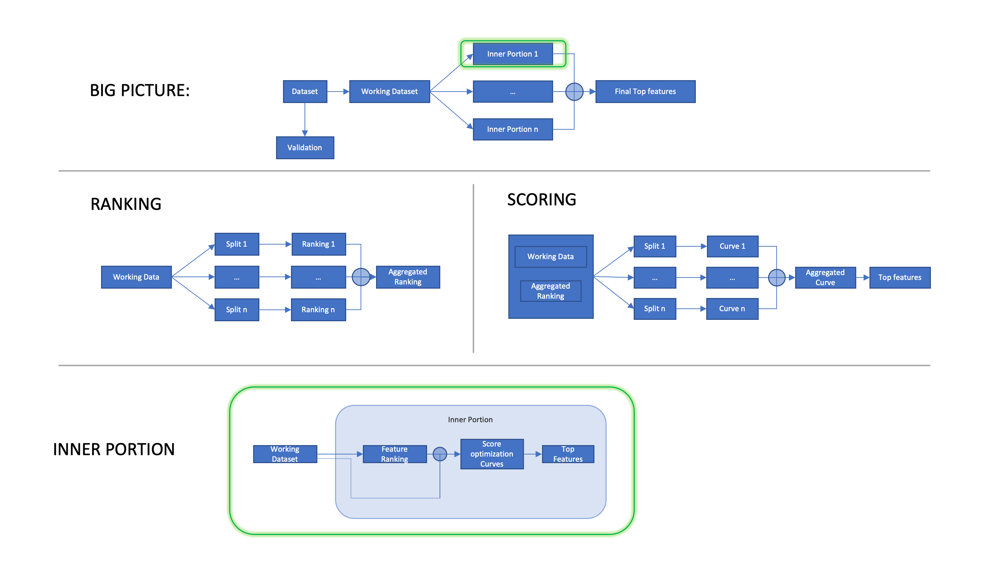

RubricOE
Method
rubricOE is a machine learning framework, implementated in python, with error bar computations to obtain interpretable genetic and non-genetic features from genomic or transcriptomic data combined with clinical factors in the form of electronic health records.
This is a schematic view of rubricoe’s processing flow
The entire rubricOE pipeline can be executed by:
|
Function to run the full RubricOE analysis |
Alternative RubricOE can be exectude using the available API:
|
Splits data into working and validation, then computes as many score curves as specified in the iterations parameter using only validation data. |
|
Computes the proportion of iterations where a feature was selected as a top feature according to its corresponding curve. |
|
Filters out top features according to threshold. |
An example can be found in this tutorial
Citation
Please cite the following article if you use RubricOE: